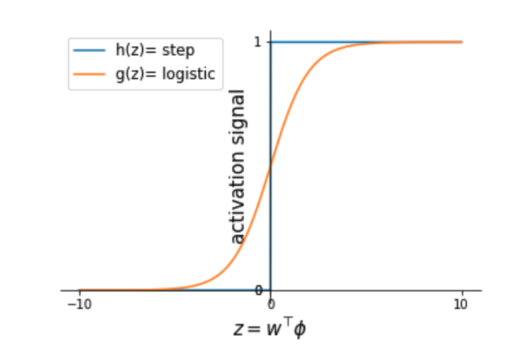
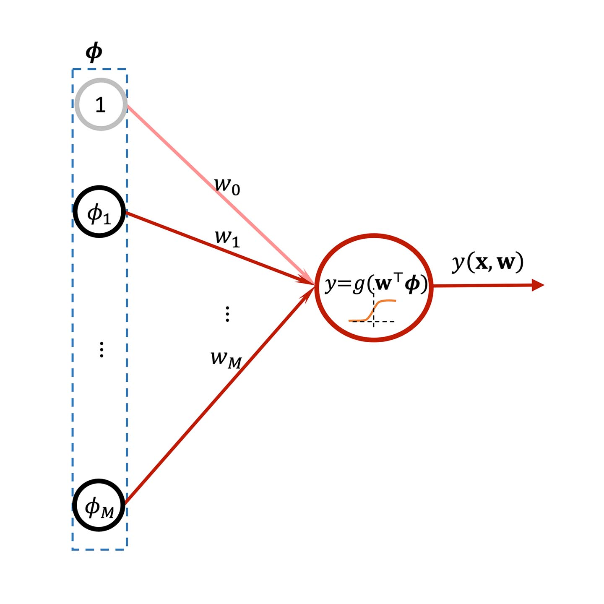
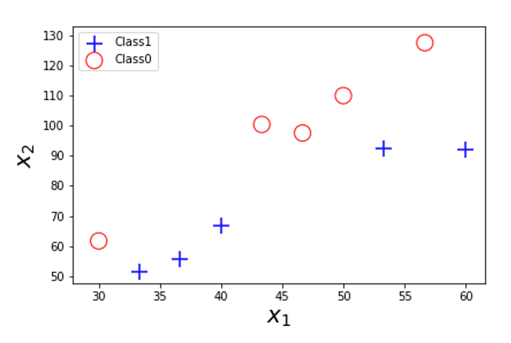
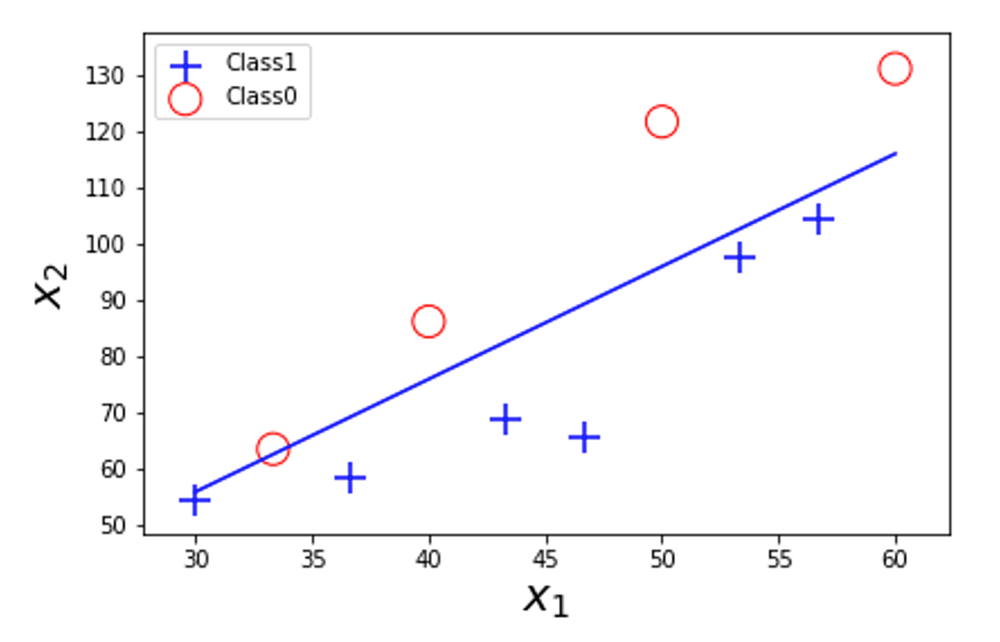
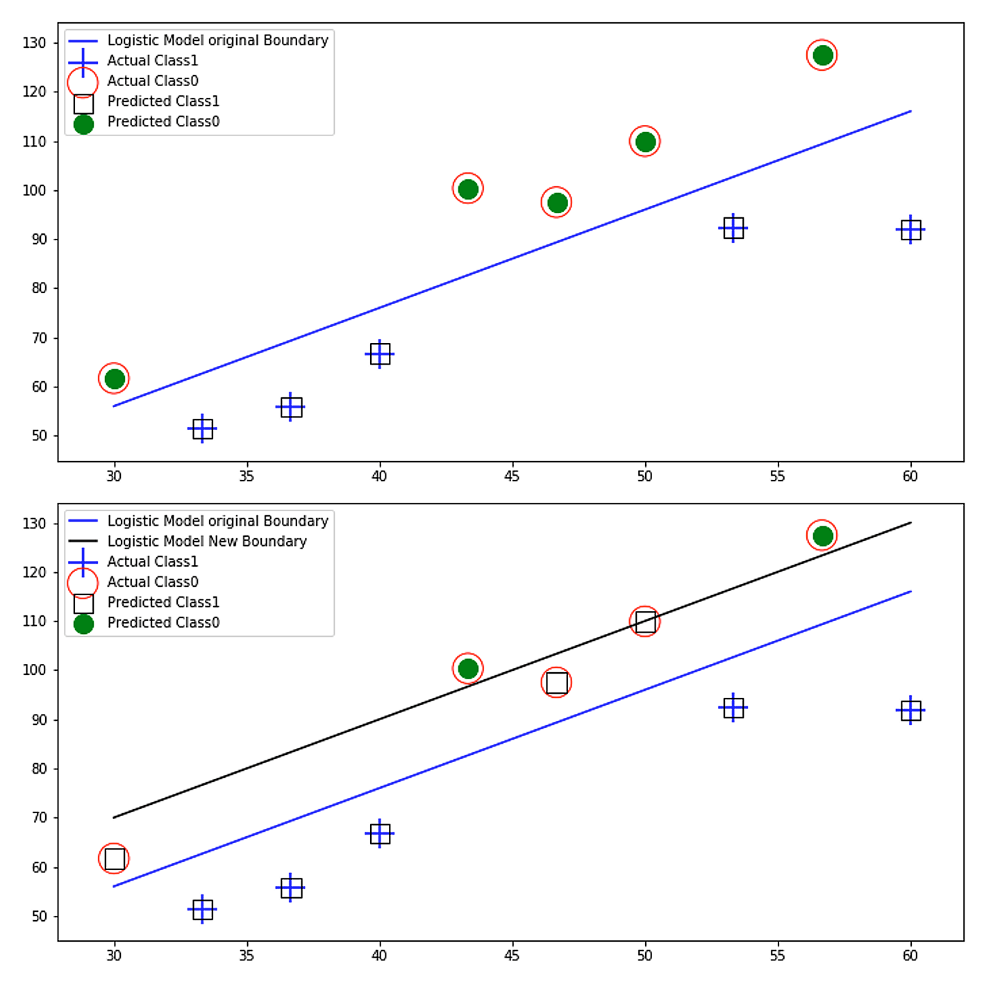

Binary classification: logistic regression
Learning outcomes:
After completing this lesson, you should be able to:
- understand the basic architecture of logistic regression to tackle binary classification problems
- understand the basic and mini-batch learning algorithm of logistic regression
- understand why we need to use the cross-entropy as a loss function for logistic regression
- appreciate that cross entropy loss creates a synergy with logistic regression to yield and update that is identical to the regression
- appreciate the strengths and weaknesses of logistic regression.
You might be thinking, regression for classification, this sounds weird! But actually, the name is a misnomer. This is not regression, it is classification. The name is used for reasons that will become apparent later. Please bear in mind that we are talking about a classification technique, not a regression technique.
We saw earlier that the perceptron is capable of classifying a linearly separable dataset and we saw that it has a simple step activation function. To move towards more general techniques that can handle non-linearly separable classes, we introduce the logistic regression model.
Logistic regression uses the logistic sigmoid as the activation function (due to which the technique owes the first term of its name); the model is expressed as:
where \(g\) is the sigmoid function that we discussed in Unit 4. Here, it is used as an activation function, while in Unit 4, it was discussed in the context of basis functions to map input space into feature space. Nevertheless, the sigmoid is the sigmoid, and it is defined as:
here in the context of an activation function \(\mathrm{z}\) is the linear decision boundaries given as \(\boldsymbol{z}=\mathbf{w}^{\top} \boldsymbol{\phi}_{n} .\)
Logistic regression is a widely used classification technique that, like the perceptron, has linear decision boundaries but, unlike the perceptron, goes one step further and employs a non-linear activation function. The benefit is that we can now bind the range of the output naturally and deal with probabilistic decisions instead of crisp decisions. The other benefit is that the activation function employed by the presented technique is differentiable and does not have cusps as in the step activation function. In fact, as shown in Figure 5.29, the activation function of the presented technique, namely the logistic function, somehow has a similar but more lenient shape to the step function of the perceptron.

Figure 5.29. Sigmoid activation function with [0, 1] signal range compared to step activation function with {0, 1} signals.
We should also emphasise here that although both the perceptron and logistic regression have linear decision boundaries, they can become capable of dealing with non-linearly separable classes via feature mapping, i.e. by employing a non-linear basis function as we saw in the previous section. However, there are some non-linear problems where feature mapping does not solve its non-linearity and where we need a built-in non-linearity in the model. In addition, as we saw in Unit 4, fixed basis functions are restrictive in terms of the adaptability that we might want to infuse into our models. This adaptability can be used to automatically discover the best basis for the problem at hand instead of the analyst choosing the type of basis needed. Below, we show a schematic representation of logistic regression.

Figure 5.30. Schematic representation of the Logistic Regression as a linear model for classification with basis.
We denote \(y\left(\mathbf{x}_{n}, \mathbf{w}\right)\) as \(y_{n}\) to simplify the notation.
Logistic models tackle binary class problems so we have two potential target outputs. In this case, it is more useful to represent (encode) the target outputs \(t_{n}\) as a binary target from the set \(\{0,1\}\), which goes along with the model output \(y_{n}\) that is in \([0,1]\) (as per the sigmoid function range).
The classification decision can be made based on the value \(y_{n}\)
if \(y_{n} \geq 0.5 \quad\) then \(\quad\) predicted class \(=1\)
if \(y_{n}<0.5 \quad\) then \(\quad\) predicted class \(=0\)
The main characteristics of a logistic function are twofold:
- it is naturally normalised because its value is confined to [0, 1]
- it is differentiable and has an appealing rule for differentiation that is related to z: \(\frac{d g(z)}{d z}=\) \(g(z)(1-g(z))\) which can be written for brevity as:
We will interpret the values that we obtain from the logistic function as the degree of membership to the positive class or the probability that the data point belongs to the positive class. So, for example if the logistic activation function produces a value of \(0.7\) for a data point \(\mathbf{x}\) then this is interpreted as \(\operatorname{pr}(\mathbf{x} \in C)=0.7\) and \(p r(\mathbf{x} \in\) \(\neg C)=0.3\) and we can conclude that \(\mathbf{x}\) is from class \(C\). More formally, we express these quantities as conditional probabilities of the logistic regression discriminative model as \(p r(y=1 \mid \mathbf{x})=0.7\) and \(\operatorname{pr}(y=0 \mid \mathbf{x})=0.3\). Conditional probabilities \(\operatorname{pr}(y=1 \mid \mathbf{x})\) and \(p r(y=0 \mid \mathbf{x})\) are called posterior class probabilities.
Logistic regression has strong roots as a probabilistic model. Logistic regression models are, in fact, discriminative models since they come up with estimations of the posterior probabilities \(\operatorname{pr}(y=1 \mid \mathbf{x})\). These models are called as such because they discriminate between patterns presented to them. Other types of probabilistic models are generative, where the probabilities \(\operatorname{pr}(\mathbf{x} \mid \mathrm{y}=1)\) are estimated. These are called as such because we can generate data from them.
The odds of \(\mathbf{x}\) being classified as positive is given as:
By substituting with the logistic function formula, we get:
This means that the logistic regression estimates the odds of \(\mathbf{x}\) being from the positive class via a simple exponentiation of a linear model. As we shall see later, this exponentiation is intimately related to logistic regression with multiple outputs.
Loss function for the logistic regression
First, we start with intuition, and then we formally define the loss. Here, the trick of the perceptron loss function (multiplying the model output \(y_{n}\) by the target class \(t_{n}\) ) does not work since the output is a continuum of values in \([ 0,1\left]\right.\) instead of \(+1\) and \(-1\) (as in the perceptron). The multiplication of \(t_{n} y_{n}\) is always non-negative, so the sign of \(t_{n} y_{n}\) will not work to detect the class as it did in the perceptron. Instead, we need to look at the value of \(t_{n} y_{n}\) to deduce the dissimilarity between the model output \(y_{n}\) and the target output \(t_{n}.\) Therefore, we might think of a loss function as follows:
However, since \(y_{n}\) is a logistic value that has exponentiation, it is easier to take the log of \(y_{n}\), which effectively cancels the exponentiation and makes the loss easier to handle. \(y_{n}\) and \(-\log y_{n}\) are both monotonic and behave similarly in terms of their minima \(\left(\log y_{n}\right.\) is always negative because \(y_{n}\) is in \([ 0,1 ])\). So we can use the following loss cases instead:
We can combine both as follows:
Ok, that was one way to motivate the use of the cross entropy loss. Below we provide the motivation formally via the entropy. Recall that the logistic function value is in [0, 1] and that it will be interpreted as a probability. Hence, our model prediction
We can now write the entropy (which represents the uncertainty) of \(y_n\) class prediction as
The entropy measures how uncertain our prediction is with respect to our model probabilities and it does not use any external answers. So, for example if \(y_{n}=0.99\) then the model is pretty confident that the data point \(\mathbf{x}_{n}\) belongs to Class 1 and the entropy of the model regarding this classification is minimal in this case \(0.08\). On the other hand, when \(y_{n}=0.51\) then although the prediction is still that the data point \(\mathbf{x}_{n}\) belongs to Class 1, the model is far less confident about its own prediction and the entropy in this case is maximal \(0.999\).
Since \(y_{n}\) is a function of \(\mathbf{w}\) and \(\mathbf{x}_{n}\) the entropy is also a function of them and can be denoted as:
to express that we are interested in how the entropy varies with \(\mathbf{w}\) for data point \(\mathbf{x}_{n}\).
Cross entropy
Although the model entropy quantifies the uncertainty in the model's own predictions, it does not tell us anything about how the model is doing in comparison to the actual class. More formally, the entropy gives us no information about how uncertain our class prediction is relative to the actual class of the data point. Instead, to measure the expected difference between our model predicted class and the actual class of a pattern \(\mathbf{x}_{n}\), we can use the cross entropy. We will denote the probabilities of the target classes as \(t_{n}\), and we note that these will take the values of 1 when the data point belongs to the positive class and 0 when it does not. We denote the distribution of the actual class as \(\mathrm{T}\) and the prediction distribution as \(\mathrm{P}\). Therefore, now we can define the cross entropy prediction \(\mathrm{y}_{n}\) as:
This is read as the cross-entropy (uncertainty) of our model prediction \(y_{n}\) relative to the actual class \(t_{n} .\) Note how cross entropy replaces the probabilities of the model prediction in the entropy formula by the probabilities of the actual class.
The cross entropy for the whole training set is given as:
Learning by minimising the cross entropy for one data point
Cross entropy creates a synergy with the logistic function. Together they produce updates that are identical to a linear regression update (hence the name), which is the main stamp of logistic regression as we shall see shortly.
Now we take the gradient for one data point \(\mathbf{x}_{n}\) to get
You can see how we get the gradient in the box below. This is surprising since it is exactly the same as the gradient for the sum of squared errors in a linear regression model. It is a pleasant by-product of the synergy between cross entropy and logistic model that will allow us to greatly simplify the learning procedure of a logistic model.
Since we need to go opposite to the gradient direction, the stochastic gradient update is given as
Now we are also in a position to be able to define a loss function that summarises the cross entropies of all data points in the dataset and average them:
and the gradient for the loss function is given as
Now we need to pause a second here. As we pointed out, this update is identical to a linear regression update without the activation function! The main difference is in how we interpret the results and in how we require our model to work. In linear regression, we are trying to come up with a prediction of a value \(y_{n}.\) In logistic regression we are trying to come up with a class \(y_{n}.\) The prediction is calculated using the logistic function while in linear regression there is no activation function at all.
Hence we can extend any of the previously covered algorithms for linear regression to work equally on logistic regression and this is the beauty of it. For example, we can build a regularised stochastic gradient algorithm that uses the above update. We can also come up with a regularised batch update for logistic regression which is shown below. We show the vectorised version of the mini-batch similar to Algorithm 6 " however of course there is a vanilla mini-batch similar to the one for the perceptron and vice-versa (scroll to the right in the box to view all of the algorithm).
Algorithm 2: Mini-Batch Stochastic Gradient Descent Updates for Logistic Regression Model with Radial Basis (see previous unit for other possible bases).
Input:
Input set: design matrix \(\mathbf{X}=\left[\mathbf{x}_{1}^{\top}, \ldots, \mathbf{x}_{N}^{\top}\right]^{\top}\) each \(\mathbf{x}_{n}\) is a vector of size \(D \quad\) # Training set
Labels set: vector \(\mathbf{t}=\left[t_{1}, \ldots, t_{N}\right]^{\top}\) each \(t_{n}\) is a scalar # Training set
\(b\): The mini-batch size (specifies how frequently we want to update the weights \(\mathbf{w}\) ).
\(\eta_{0}\): Initial learning rate
\(epcs\): Number of epochs
\(\boldsymbol{\mu}_{j}: M\) Basis centres, each is a vector of size \(D\)
\(\boldsymbol{\Sigma}\) : Covariance matrix of size \(\mathrm{D} \times \mathrm{D}\)
Output: \(\mathbf{w}\) an approximation for optimum weights \(\mathbf{w}^{*}\); a vector of size \(M+1\)
Logistic regression(\(\mathbf{X}\),\(\mathbf{t}\),\(b\),\(\eta_{0}\),\(epcs\)):
Initialise \(\mathbf{w}\) and \(\eta=\eta_{0}\)
For \(epoch =\ 1:\ epcs\)
For iteration \(\tau=1:q\) # \(q\geq N/\ b\)
Select a mini-batch \(\mathbf{X}_\tau,\mathbf{t}_\tau\) of size \(b\) from \(\mathbf{X},\mathbf{t}\) # by sampling or by shuffling & partitioning
Map \(\mathbf{x}_{\tau}\) to \(\mathbf{\Phi}_{\tau}\) # \(\phi_{j}\left(\mathbf{x}_{n}\right)=e^{-\frac{1}{2}\left(\mathbf{x}_{n}-\mu_{j}\right)^{\top} \mathbf{x}\left(\mathbf{x}_{n}-\mu_{j}\right)} j=1, \ldots, M\)
\(\mathbf{\Phi}_{\tau}=\left[\mathbf{1}_{b}, \mathbf{\Phi}_{\tau}\right]\) # add dummy feature to the mini-batch
\(\boldsymbol{z}=\boldsymbol{\Phi}_{\tau} \mathbf{w}\) # get linear model for the batch
\(y_{\tau}=\frac{1}{1+e^{-z}}\) # take the logistic for batch linear model
\(\mathbf{w}=\mathbf{w}+\eta \frac{1}{b} \mathbf{\Phi}_{\tau}^{\top}\left(\mathbf{t}_{\tau}-\boldsymbol{y}_{\tau}\right)\) # now update
Decay \(\eta\) # if necessary
Return the final solution \(\mathbf{w}\)
Please note that since we have used a non-linear activation function (the sigmoid), there is no direct least squares solution for the logistic regression model. However, since its loss function is concave (can be proven to be quadratic), we can still come up with a closed-form solution based on the Newton-Raphson technique to yield the iterative reweighted least square solution. This is, however, outside the scope of our coverage and will not be necessary for the rest of this unit.
More about cross entropy
Recall that the entropy (which is the clutter or uncertainty) of a random variable \(V\) that can take either of two outcomes \(v\) and \(\neg v\) (Bernoulli) as per a distribution \(Q\) is defined as
The letter \(\mathrm{H}\) is eta in Greek which is close to the first couple of vowels for the word entropy.
On the other hand, if we have another distribution for the probabilities \(p r(v)\) and \(1-p r(v)\) then to differentiate between them, we add a subscript to denote which distribution we are talking about
Now we might be interested to know the relative entropy of \(\mathrm{P}\) with respect to \(\mathrm{Q}\) or vice versa. i.e. when we want to know how much the entropy of \(V\) in \(\mathrm{P}\) differs from the entropy of \(V\) in \(\mathrm{Q}\) then we can look at the cross entropy defined as
The gradient of the cross entropy terms for binary class problem
All gradients are with respect to \(\mathbf{w}\)
However, we have \(y_{n}=g\left(\mathbf{w}^{\top} \boldsymbol{\phi}_{n}\right)\) and \(\nabla y_{n}=y_{n}\left(1-y_{n}\right) \boldsymbol{\phi}_{n}\) as per the derivative for logistic function.
Exercise
Please see the previous exercise to compare logistic with the perceptron. Also see the following Jupyter notebook for more insight into logistic regression.
- Download exercise (.ipynb): Exercise 4
Logistic regression example with cross entropy
Let us look at the following dataset:

Figure 5.31. Example of a binary class dataset.
The data has been generated to be separated by the following linear classifier \(x_{2}=2 x_{1}-4\) that splits the dataset into two classes. The classifier is shown below in Figure 5.32.

Figure 5.32. Example of a binary class dataset with decision boundary.
Data points under the line satisfy \(-x_{2}+2 x_{1}-4 \geq 0\) and are classified as positive and data points that are above the line satisfy \(-x_{2}+2 x_{1}-4<0\) are classified as negative (positive represented as + and negative represented as a circle \(\mathrm{O}\) in the figures). Let us build a logistic regression classifier based on the linear model provided.
The dataset is given as follows (data has been rounded to the nearest 2 decimal places):
| \(x_{0}\) | \(x_{1}\) | \(x_{2}\) | Actual Class \(t\) | \(\mathbf{w}_1^\top\mathbf{x}\) | Predicted class \(y=g(\mathbf{w}_1^\top\mathbf{x})\) |
|---|---|---|---|---|---|
| 1 | 30.00 | 61.67 | 0 | -5.67 | 0.0 |
| 1 | 33.33 | 51.46 | 1 | 11.20 | 1.0 |
| 1 | 36.67 | 55.84 | 1 | 13.50 | 1.0 |
| 1 | 40.00 | 66.75 | 1 | 9.25 | 1.0 |
| 1 | 43.33 | 100.36 | 0 | -17.70 | 0.0 |
| 1 | 46.67 | 97.52 | 0 | -8.18 | 0.0 |
| 1 | 50.00 | 109.93 | 0 | -13.93 | 0.0 |
| 1 | 53.33 | 92.38 | 1 | 10.28 | 1.0 |
| 1 | 56.67 | 127.47 | 0 | -18.13 | 0.0 |
| 1 | 60.00 | 91.92 | 1 | 24.08 | 1.0 |
Now if we utilise the concept of cross entropy, we can easily realise that all values of the predicted classes match exactly the target class and the cross entropy is 0.
On the other hand, if we come up with a different linear discriminant such as \(x_{2}=2 x_{1}+10\) which has the same slope as before but with a different intercept we get:
The dataset is given as follows:
| n | \(x_{0}\) | \(x_{1}\) | \(x_{2}\) | Actual Class \(t\) | \(\mathbf{w}_1^\top\mathbf{x}\) | Predicted class \(y=g(\mathbf{w}_1^\top\mathbf{x})\) | \({\widetilde{H}}_n\left(\mathbf{w}_1\right)\) | \(\mathbf{w}_2^\top\mathbf{x}\) | Predicted class \(y=g(\mathbf{w}_2^\top\mathbf{x})\) | \({\widetilde{H}}_n\left(\mathbf{w}_2\right)\) |
|---|---|---|---|---|---|---|---|---|---|---|
| 0 | 1 | 30.00 | 61.67 | 0 | -5.67 | 0.0 | 0.0 | 8.33 | 1.00 | 3.62 |
| 1 | 1 | 33.33 | 51.46 | 1 | 11.20 | 1.0 | 0.0 | 25.20 | 1.00 | 0.00 |
| 2 | 1 | 36.67 | 55.84 | 1 | 13.50 | 1.0 | 0.0 | 27.50 | 1.00 | 0.00 |
| 3 | 1 | 40.00 | 66.75 | 1 | 9.25 | 1.0 | 0.0 | 23.25 | 1.00 | 0.00 |
| 4 | 1 | 43.33 | 100.36 | 0 | -17.70 | 0.0 | 0.0 | -3.70 | 0.02 | 0.01 |
| 5 | 1 | 46.67 | 97.52 | 0 | -8.18 | 0.0 | 0.0 | 5.82 | 1.00 | 2.53 |
| 6 | 1 | 50.00 | 109.93 | 0 | -13.93 | 0.0 | 0.0 | 0.07 | 0.52 | 0.32 |
| 7 | 1 | 53.33 | 92.38 | 1 | 10.28 | 1.0 | 0.0 | 24.28 | 1.00 | 0.00 |
| 8 | 1 | 56.67 | 127.47 | 0 | -18.13 | 0.0 | 0.0 | -4.13 | 0.02 | 0.01 |
| 9 | 1 | 60.00 | 91.92 | 1 | 24.08 | 1.0 | 0.0 | 38.08 | 1.00 | 0.00 |
Cross Entropy \(\tilde{H}\left(\mathbf{w}_{1}\right)=0.01\) (due to some rounding)
Cross Entropy \(\tilde{H}\left(\mathbf{w}_{2}\right)=6.48\)
Calculating the cross entropy, we can realise that not all values of the predicted classes match the target class, and so the cross entropy is higher than 0:
$$ \widetilde{H}\left(\mathbf{w}_{2}\right)=6.48 $$ Note that we have calculated the cross entropy log using the e base, not 2, so the unit is nats, not bits(as we did in Unit 2). Regardless of the base of the log, the comparison will hold. Although bits are easier to interpret as a unit of information than nats, we used the base e because it is more natural to do so to stay consistent with the logistic function properties (the properties that we have proven will be slightly changed when we use the base 2 to include log(2)).
Exercise
The plots in Figure 5.33 below show visually the effect of shifting the linear border of the logistic model, due to which 3 data points have been misclassified (the data points with a box and circle). So we can notice how misclassifying these data points raised the cross entropy relatively significantly. See the following Jupyter Notebook:
- Download notebook (.ipynb): Exercise 3

Figure 5.33. Two graphs showing an example of a binary dataset. Top: an optimal decision boundary identical to the actual boundary of the dataset, no misclassification occurred. Bottom: showing the effect of shifting the decision boundaries by changing the bias. The boxes with red circles show misclassified cases.
Least square for linear model classification
Applying least squares will get us an estimation of the class label. However, Least Squares is not a good approach to estimate the classes. The issue with this approach is that it is sensitive to outliers. Also, the result of the minimisation will be a value that is not guaranteed to be in [0, 1] so we cannot expect a 1-of-K binary coding to be output by the model which we will talk about in the next section.
Lesson summary
In this lesson, we have covered another simple, but more powerful linear classification model that utilises a non-linear activation function to perform a linear classification task. Logistic regression is a common technique that has desirable characteristics, including its probabilistic interpretability, and the fact that its update rules are identical to the update rules of a linear regression model. Logistic regression forms an important component for more complex non-linear models, such as neural networks for classification.